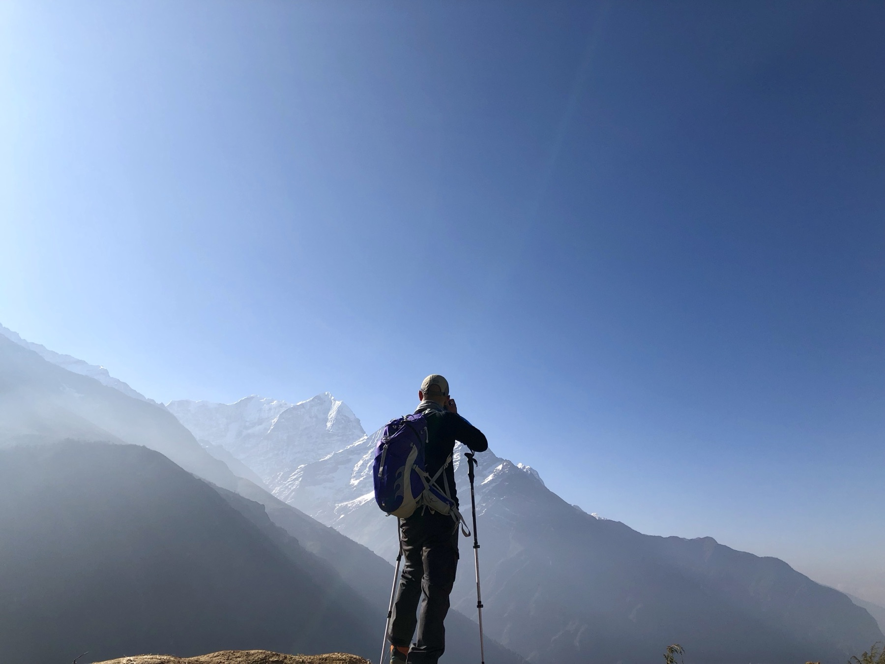

My Shift Report
2023Real-time KPI and staffing platform that improves emergency-department nursing and patient care.

Emergency Medicine · Health Technology
I'm a physician-leader in emergency medicine, building the technology, data models, and education that improve how care gets delivered.
I'm an emergency physician and Vice Chairman of Emergency Medical Services at Memorial Hospital West in Pembroke Pines, Florida. Alongside clinical practice, I build technology, data models, and education that make emergency care faster, safer, and more humane.
A first-generation American raised across Europe, I work comfortably in English, French, German, and Spanish, and I'm endlessly curious. Away from the department you'll find me woodworking, cooking, painting, cultivating bonsai, and out in the mountains with a camera.
Four threads that run through everything I do, in and out of the emergency department.
Directing emergency services at a busy South Florida hospital: quality, informatics, and the day-to-day operations that keep an ED running well.
Founding and building clinical and educational platforms that put better information in the hands of physicians, nurses, and residents.
Designing data models that turn emergency-department metrics into decisions, from throughput to imaging utilization.
Two decades of textbooks, board-prep, and CME, and a continuing commitment to training the next generation of clinicians.
A sample of the platforms, tools, and organizations I've founded or helped build.
Real-time KPI and staffing platform that improves emergency-department nursing and patient care.
AI-based educational platform that trains emergency medicine residents through simulated cases.
AI-enhanced platform for resident development and residency-program management.
A suite of data models, P2P, TTM, VeLO, C3 and more, built to optimize emergency-department operations.
Nonprofit providing comprehensive dentistry to survivors of domestic violence, at home and abroad.
A developmental framework for optimizing the inflection points of professional growth.
Earlier work includes Key Elements, GoGrad, ScribeQA, and the Virtual Smile Designer voice assistant.
I've spent much of my career putting medical knowledge into forms other people can learn from.
Whether it's clinical collaboration, health technology, teaching, or just a good conversation, I'm glad to hear from you.